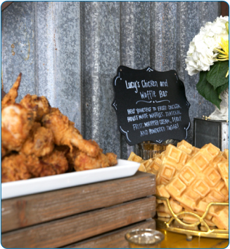
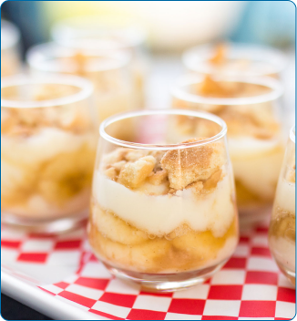
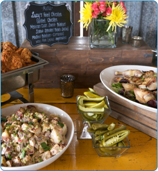

Full Service Catering
Lucy’s Catering is far more than just fried chicken! While we are known for Texas Southern cuisine, we have crafted a wide range of dishes, small bites, live action stations and bars that can take your event to the next level. We pride ourselves on keeping our food and service affordable while showing our clients and their guests a true taste of Austin, Texas. In addition, we offer food delivery & setup, staffing & bartending services. We would love to customize a menu for you.
Corporate Catering
Lucy’s Catering is far more than just fried chicken! While we are known for Texas Southern cuisine, we have crafted a wide range of dishes, small bites, live action stations that can take your event to the next level. We pride ourselves on keeping our food and service affordable while showing our clients and their guests a true taste of Austin, Texas. We will deliver to your office and be a big hit for a nice employee meal.
Drop Off and Delivery
Lucy’s offers chicken dinner delivery and drop-off for parties, meetings, and other gatherings. Check out our Delivery Menu and choose from a variety of sides like Mexican coke sweet potatoes, okra, grilled corn on the cob, and mac ‘n cheese. Round out the meal with lemonade or tea and Lucy’s whole pies for dessert.
Catering Gallery